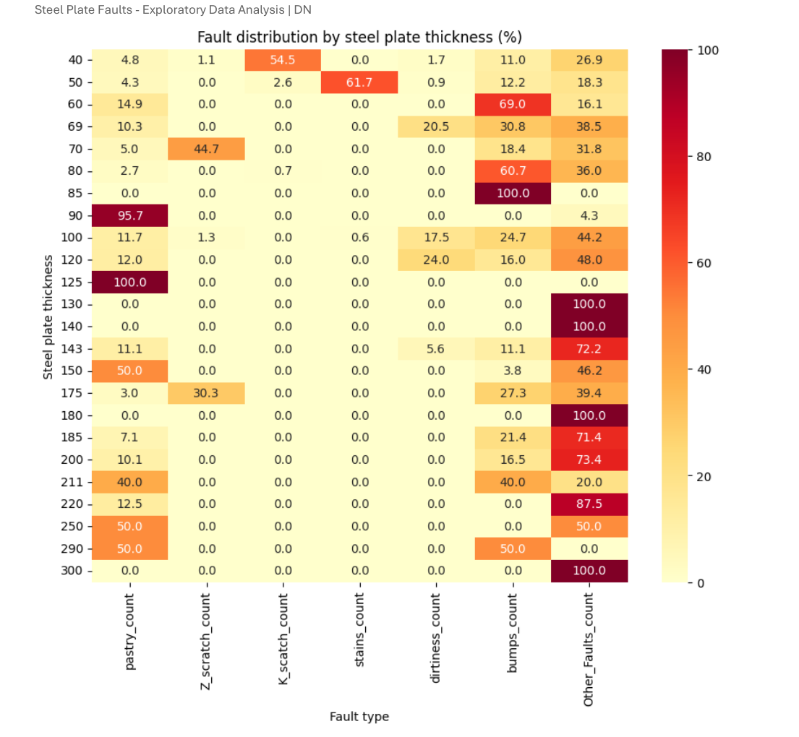
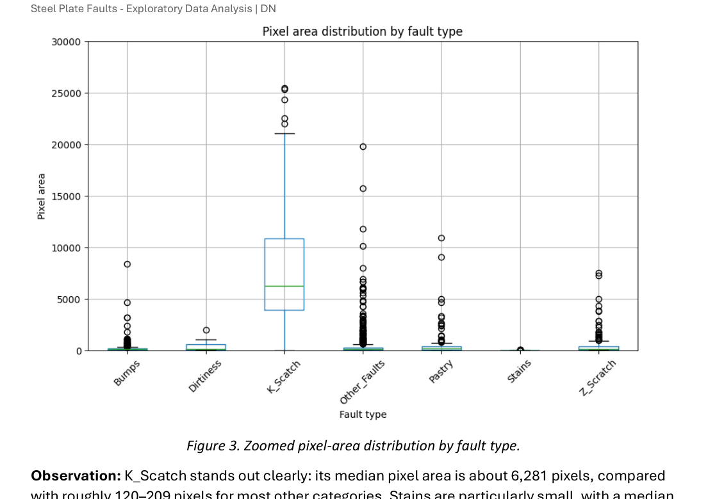
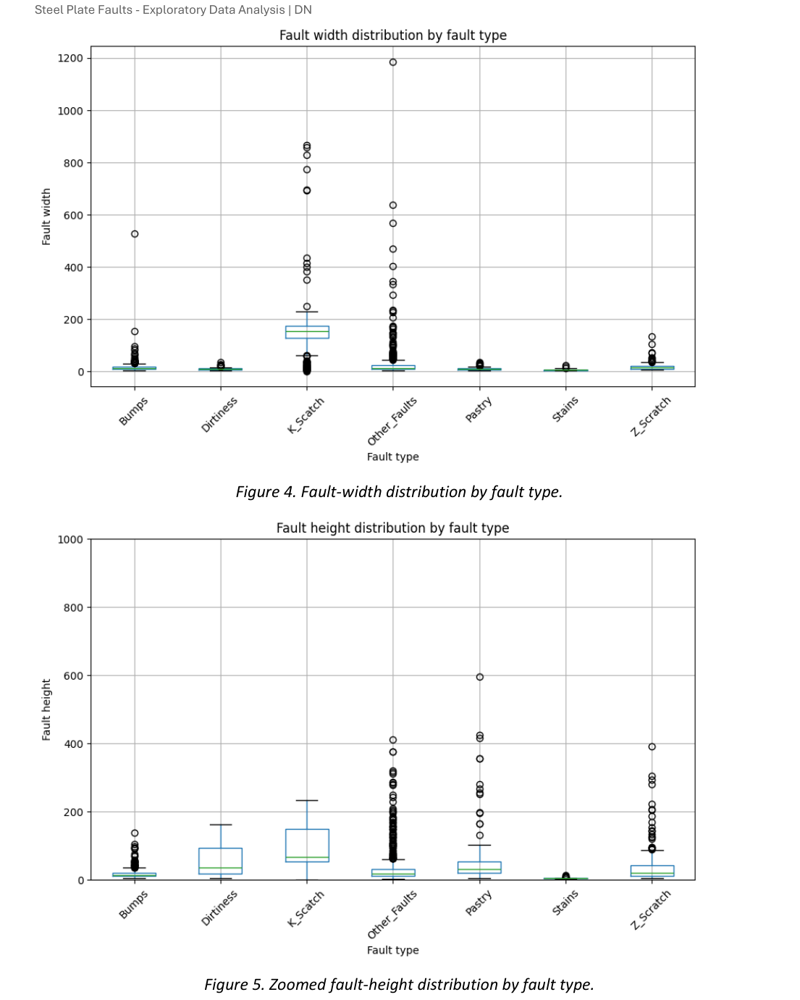

COMPLETED · EXPLORATORY DATA ANALYSIS
Steel Plate Fault Analysis
Exploratory analysis of recorded steel plate faults using SQL, pandas and Python visualisation. The project examines how fault categories vary with steel grade, plate thickness, defect size and defect geometry.
Project objective
Understand how recorded fault types vary with steel grade, plate thickness, defect size and defect geometry, while keeping the interpretation within the limits of the available data.
Dataset
1,941 recorded fault instances across seven fault categories, covering two steel types: A300 and A400. The source is the UCI Machine Learning Repository dataset accessed via Kaggle.
Questions explored
- How do fault types differ between A300 and A400 steel?
- Do different plate thicknesses show different fault distributions?
- Do fault types have characteristic sizes or shapes?
Analysis approach
SQL was used for grouping and aggregation, pandas for reshaping and descriptive analysis, and Python visualisation for categorical comparisons, grouped patterns, distributions and outliers.

Steel grade
A300 and A400 show noticeably different distributions of recorded fault categories. In the available records, A300 is dominated by Bumps and Other_Faults, while A400 has large shares of K_Scatch and Other_Faults. These are patterns within recorded faults, not evidence that one steel grade is more fault-prone.

Plate thickness
The mix of recorded fault categories changes across thickness groups, but some groups contain very few observations. Percentage differences in small groups therefore need to be interpreted cautiously.

Fault size
K_Scatch stands out clearly in defect size: its median pixel area is about 6,281 pixels, compared with roughly 120–209 pixels for most other fault categories. Stains are particularly small, with a median pixel area of 16.5 pixels. Large outliers were retained because there was not enough evidence to classify them as errors.

Geometry
Fault width and height were derived from coordinate limits. K_Scatch has a much larger median width than the other classes. An extreme K_Scatch height observation was retained and the plot was zoomed so that typical distributions remained readable.
Key conclusion
The dataset is better suited to fault characterisation and classification questions than to estimating manufacturing defect rates or proving causes. Geometry and size also appear useful for distinguishing fault types.
Reflection
The project reinforced the importance of matching conclusions to the evidence actually present in a dataset. It also provided practical experience combining SQL and pandas, reshaping data, comparing percentages rather than only raw counts, and selecting different visualisations for categorical comparisons, grouped patterns and distributions.